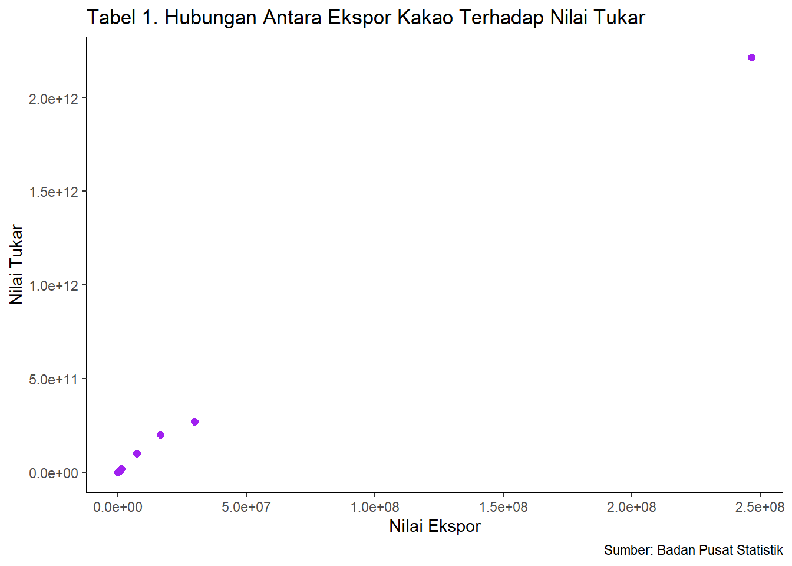

Analisis Pengaruh Ekspor Kakao ke Amerika Serikat Terhadap Nilai Tukar Rupiah Tahun 2010-2021
Metode Penelitian Politeknik APP Jakarta
Author
Ratu Aulia Japano
Published
October 10, 2022
logo APP muncul secara random lalalala
1 Pendahuluan
1.1 Latar belakang
Pada Peraturan Pemerintah Nomor 10 Tahun 2021, ekspor merupakan kegiatan mengeluarkan barang dari daerah pabean. Daerah pabean merupakan suatu daerah milik Republik Indonesia yang terdiri dari wilayah darat, perairan, dan udara yang juga mencakup seluruh daerah tertentu yang berada dalam Zona Ekonomi Eksklusif (ZEE). Kakao adalah salah satu komoditas ekspor dari subsektor perkebunan yang merupakan komoditas unggulan nasional yang memberikan sumbangan devisa ketiga terbesar setelah kelapa sawit dan karet. Kakao juga menempati luas areal keempat terbesar untuk subsektor perkebunan setelah kelapa sawit, kelapa dan karet. Hal ini menunjukkan bahwa kakao merupakan komoditas yang sangat penting bagi perekonomian Indonesia, (Hasibuan et al., 2012).
Kakao merupakan komoditas andalan perkebunan yang peranannya cukup penting bagi perekonomian nasional, khususnya sebagai penyedia lapangan kerja, sumber pendapatan dan devisa negara. Disamping itu kakao juga berperan dalam mendorong pengembangan wilayah dan pengembangan agroindustri. Indonesia merupakan produsen kakao terbesar ketiga di dunia setelah negara Pantai Gading dan Ghana. Daerah penghasil kakao Indonesia adalah sebagai berikut: Sulawesi Selatan 184.000 ton (28,26%), Sulawesi Tengah 137.000 ton (21,04%), Sulawesi Tenggara 111.000 ton (17,05%), Sumatera Utara 51.000 ton (7,85%), Kalimantan Timur 25.000 ton (3,84%), Lampung 21.000 ton (3,23%) dan daerah lainnya 122.000 ton (18,74%).
Nilai tukar atau kurs (exchange rate) satu mata uang terhadap lainnya merupakan bagian dari proses valuta asing. Nilai tukar merupakan jumlah mata uang dalam negeri yang harus dibayarkan untuk memperoleh satu unit mata uang asing. Naik turunnya nilai tukar mata uang atau kurs valuta asing bisa terjadi dengan berbagai cara, yakni bisa dengan cara dilakukan secara resmi oleh pemerintah suatu negara yang menganut sistem managed floating exchange rate, atau bisa juga karena tarik menariknya kekuatan‐kekuatan penawaran dan permintaan di dalam pasar (market mechanism) dan lazimnya perubahan nilai tukar mata uang.
1.2 Ruang lingkup
Penelitian ini ditujukan untuk membandingkan data nilai tukar rupiah yang diambil dari Badan Pusat Statistik (BPS) pada tahun 2010-2021 dengan menggunakan data nilai ekspor kakao dari negara Indonesia ke negara Amerika Serikat.
1.3 Rumusan masalah
Berdasarkan uraian latar belakang pada masalah tersebut, maka terdapat beberapa idikator yang menjadi rumusan masalah dalam penelitian ini, adapun yang menjadi tujuan dari penelitian ini adalah sebagai berikut:
Apakah nilai tukar rupiah berpengaruh terhadap nilai ekspor kakao Indonesia ke negara Amerika Serikat pada tahun 2010-2021?
1.4 Tujuan dan manfaat penelitian
Adapun yang menjadi tujuan pada penelitian ini, yaitu:
Untuk mengetahui pengaruh ekspor kakao ke Amerika Serikat terhadap nilai tukar rupiah selama 11 tahun terakhir.
Adapun manfaat yang diperoleh pada penelitian ini, yaitu:
Untuk melihat bagaimana perkembangan nilai tukar rupiah terhadap Amerika Serikat selama 11 tahun terakhir.
2 Studi pustaka
2.1 Perdagangan Internasional
Perdagangan didefinisikan sebagai pertukaran barang dan jasa atau uang yang saling menguntungkan atau memberi manfaat dan didasarkan atas kehendak sukarela dari masing-masing pihak. Sedangkan perdagangan internasional dapat didefinisikan sebagai transaksi bisnis antara pihak-pihak dari lebih daripada satu negara. Transaksi bisnis ini contohnya adalah ekspor produk dari suatu negara ke negara lain, investasi pembangunan pabrik di negara asing, pembelian bahan baku dari luar negeri, dan memproduksi salah satu bagian produk di luar negeri dan merakitnya di dalam negeri. Yang melakukan perdagangan atau bisnis adalah penduduk suatu negara dengan penduduk negara lain. Penduduk bias seorang warga negara biasa, sebuah perusahaan, sebuah lembaga pemerintah, atau sebuah organisasi nirlaba.
2.2 Definisi Kurs Dollar
Dalam pengertiannya, kurs untuk kurs dolar AS merupakan suatu istilah yang cukup sering digunakan saat ada penukaran uang asing dengan uang rupiah atau sebaliknya. Kurs adalah harga suatu mata uang dari suatu negara terhadap mata uang yang berasal dari negara lainnya. Kurs bisa dinilai atau dinyatakan dengan mata uang dari negara lain. Kurs adalah suatu perbandingan nilai, ketika ada pertukaran antar dua mata uang yang saling berbeda, maka di dalamnya akan menghasilkan perbandingan pada nilai atau harga dari mata uang itu, salah satunya kurs dolar terhadap rupiah.
Kurs dolar, seperti kurs mata uang lain, juga bisa mengalami dua macam perubahan di dalamnya, yakni apresiasi dan juga depresiasi. Apresiasi adalah suatu peningkatan mata uang terhadap mata uang asing lainnya yang terjadi karena adanya daya tarik yang sangat kuat antara permintaan dan penawaran yang ada di pasar valuta asing. Apabila mata uang dari negara lain mengalami suatu apresiasi pada mata uang dari negara lain, maka akan menyebabkan kegiatan ekspor menjadi lebih mahal dan kegiatan impor menjadi murah.
Sedangkan depresiasi adalah suatu penurunan pada nilai mata uang lokal terhadap mata uang dari negara lain. Apabila mata uang lokal mengalami depresiasi atas mata uang dari negara lain, maka akan menyebabkan kegiatan ekspor menjadi lebih murah dan kegiatan impor menjadi lebih mahal.
3 Metode penelitian
3.1 Data
Pendekatan yang digunakan pada penulisan ini merupakan pendekatan kuantitatif yang berbentuk asosiatif. Berbentuk asosiatif karena tujuan dari penelitian ini sendiri adalah untuk mengetahui hubungan suatu variabel dengan variabel lainnya. Adapun tujuan dari penelitian ini adalah untuk mengetahui pengaruh ekspor kakao ke Amerika Serikat terhadap nilai tukar rupiah tahun 2010-2021. Data tersebut diperoleh dari website BPS.
library(readxl)dat<-read_excel ('Nilai Kurs Kakao.xlsx')library(ggplot2)ggplot(data=dat, aes(x=X, y=Y))+geom_point(color='purple', size=2)+labs(title="Tabel 1. Hubungan Antara Ekspor Kakao Terhadap Nilai Tukar",x="Nilai Ekspor",y="Nilai Tukar",caption ="Sumber: Badan Pusat Statistik") +theme_classic()

Figure 1: Hubungan Antara Ekspor Kakao Terhadap Nilai Tukar
3.2 Metode analisis
Penelitian ini menggunakan metode pendekatan yang bersifat kuantitatif. Sugiyono (2018) menyatakan bahwa data kuantitatif merupakan metode penelitian yang berlandaskan positivistic (data konkrit), data penelitian berupa angka-angka yang akan diukur menggunakan statistik sebagai alat uji penghitungan, berkaitan dengan masalah yang diteliti untuk menghasilkan suatu kesimpulan. Metode Deskriptif digunakan untuk membuat gambaran secara sistematis dan faktual mengenai gambaran perkembangan dari setiap variabel di dalam penelitian yaitu ekspor, impor dan pertumbuhan ekonomi Indonesia. Selanjutnya analisis regresi digunakan untuk menganalisis pengaruh ekspor kakao ke Amerika Serikat terhadap nilai tukar rupiah tahun 2010-2021. Rumus yang digunakan untuk regresi, sebagai berikut:
y_t=β_0+β_1 x_t+μ_t
Yt = Nilai tukar Dollar Amerika Serikat β0 = Koefisien konstanta β1 = Parameter Xt = Nilai ekspo μi = Error term
4 Pembahasan
4.1 Pembahasan masalah
Tahun
Nilai Ekspor (USD)
Kurs
Nilai Tukar(IDR)
2010
246501286
8991
2216293062426
2011
29671170
9068
269058169560
2012
628099
9670
6073717330
2013
16439259
12189
200378127951
2014
1148482
12440
14287116080
2015
7288379
13795
100543188305
2016
1345375
13436
18076458500
2017
875579
13548
11862344292
2018
40
14481
579240
2019
90640
13901
1259986640
2020
213386
14105
3009809530
2021
236958
14269
3381153702
4.2 Analisis masalah
Hasil pengaruh ekspor kakao ke Amerika Serikat terhadap nilai tukar rupiah tahun 2010-2021 menggunakan regresi multivariat. Hasilnya ditunjukkan sebagai berikut:
Call:
lm(formula = Y ~ X, data = dat)
Residuals:
Min 1Q Median 3Q Max
-9.624e+09 -8.690e+09 -6.072e+09 -3.395e+09 4.341e+10
Coefficients:
Estimate Std. Error t value Pr(>|t|)
(Intercept) 9.625e+09 5.405e+09 1.781 0.105
X 8.963e+03 7.522e+01 119.164 <2e-16 ***
---
Signif. codes: 0 '***' 0.001 '**' 0.01 '*' 0.05 '.' 0.1 ' ' 1
Residual standard error: 1.752e+10 on 10 degrees of freedom
Multiple R-squared: 0.9993, Adjusted R-squared: 0.9992
F-statistic: 1.42e+04 on 1 and 10 DF, p-value: < 2.2e-16
5 Kesimpulan
Dari hasil data analisis kuantitatif yang telah diteliti, hasil ekspor kakao terhadap negara Amerika Serikat berpengaruh positif terhadap nilai tukar rupiah. Komoditi kakao pada tahun 2021 merupakan komoditi yang paling banyak di ekspor ke Amerika Serikat hingga mencapai US$216,41 juta atau setara 17,91% dari total nilai ekspor. Maka dari itu jika ekspor kakao ke negara Amerika Serikat berpengaruh positif terhadap nilai tukar rupiah maka hal tersebut dapat mempengaruhi nilai kurs rupiah terhadap USD.
6 Referensi
Redaksi, T. (2022, May 11). Mengenal Apa Itu Ekspor Impor, Pengertian, Tujuan & Contohnya. CNBC Indonesia; cnbcindonesia.com. https://www.cnbcindonesia.com/mymoney/20220511125907-72-338113/mengenal-apa-itu-ekspor-impor-pengertian-tujuan-contohnya Perdagangan Internasional. (2018). Google Books. https://books.google.co.id/books?hl=id&lr=&id=NJvFDwAAQBAJ&oi=fnd&pg=PR5&dq=perdagangan+internasional&ots=uwD64uUxOR&sig=QeG-GVM2wpUolaCV3bQ_t9nfKak&redir_esc=y#v=onepage&q=perdagangan%20internasional&f=false Memahami Apa Saja Manfaat Jual dan Beli Kurs Dolar. (2021). Cimbniaga.co.id. https://www.cimbniaga.co.id/id/inspirasi/perencanaan/memahami-apa-saja-manfaat-jual-dan-beli-kurs-dolar Cindy Mutia Annur. (2022, January 11). Daftar Negara Tujuan Utama Ekspor Kakao RI pada 2021, AS Terbesar. Katadata.co.id; Databoks. https://databoks.katadata.co.id/datapublish/2022/11/01/daftar-negara-tujuan-utama-ekspor-kakao-ri-pada-2021-as-terbesar#:~:text=Ekspor%20komoditas%20dengan%20kode%20 Badan Pusat Statistik. (2013). Bps.go.id. https://www.bps.go.id/indicator/13/284/4/kurs-tengah-beberapa-mata-uang-asing-terhadap-rupiah-di-bank-indonesia-dan-harga-emas-di-jakarta.html